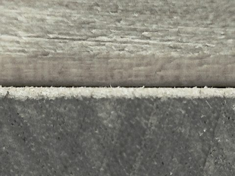
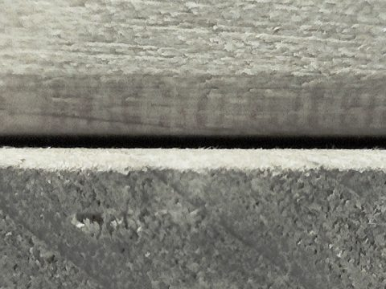
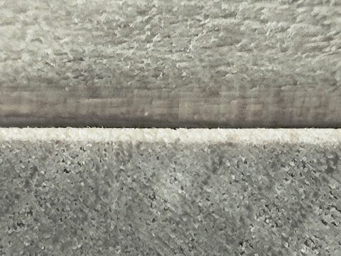
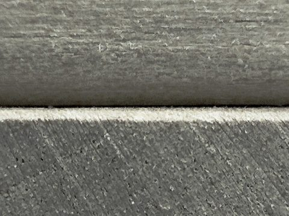
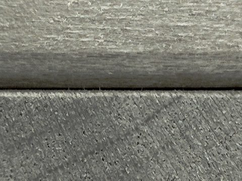
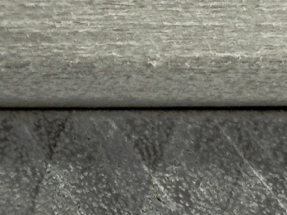
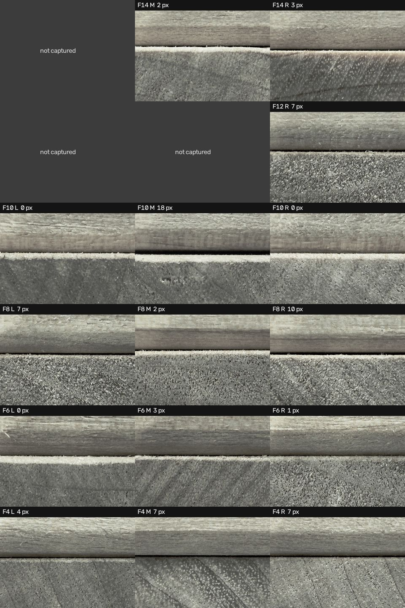
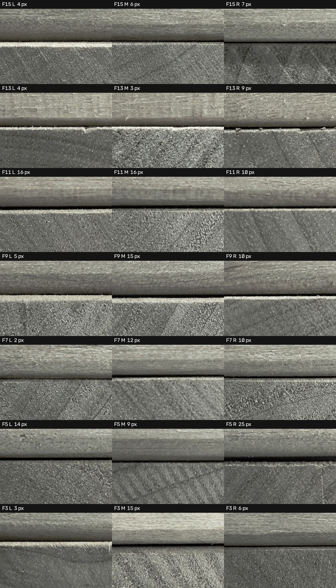

2026-11-03 · CES2027 젠가 비전 · 새 탑 1개 시험
젠가 틈 스캔 결과: 뽑을 순서를 얼마나 맞혔나
Dino-Lite로 +x면과 −y면의 틈을 재서 뽑을 순서를 만들었습니다. 밀기 전에 고정한 순서는 연속 3개에서 끊겼고, 결과를 본 뒤 찾은 새 기준으로는 1~11위가 모두 빠지는 블록이었습니다. 새 기준은 다음 탑에서 검증해야 합니다.
무엇을 했나
- 스캔: 오른팔이 쥔 Dino-Lite(다이얼 40)로 블록 끝면 위쪽 틈을 찍고, 검은 틈의 두께를 px로 쟀습니다.
- 면 선택: +x면은 짝수 층, −y면은 홀수 층의 끝면이 보입니다. 두 면을 합치면 3~15층을 층마다 한쪽 끝씩 봅니다. 1, 2층과 맨 위 두 층(16, 17층)은 보지 않습니다. 층 번호는 맨 아래가 1층입니다.
- 빼안빼룰: 한 층은
안빼안(가운데만 빠짐)이거나빼안빼(양옆이 빠짐)라고 봅니다. 가운데를 뽑으면 그 층은 끝이고, 옆을 뽑으면 바로 반대쪽 옆을 뽑고 끝입니다. - 검증: 3~15층의 모든 블록을 손으로 하나씩 밀어 보고 제자리에 되돌렸습니다.
주의: 연속 성공 횟수는 손으로 민 결과에 순서를 대입해 계산한 값입니다. 앞 블록이 빠진 상태에서 실제로 연속으로 뽑은 결과는 아닙니다.
밀기 전에 고정한 순서의 결과
px 값이 큰 블록부터 나열한 순서입니다. 19개 중 14개가 빠졌지만, 4번째인 11층 가운데에서 연속이 끊겼습니다. 이 층은 16 / 16 / 10 px로 동점이었고 동점 규칙(가운데 먼저)이 틀렸습니다.
| 사용한 면 | 룰 없음 연속 | 룰 적용 연속 | 동점 순서에 따른 범위 | 룰 적용 상위 8개 중 성공 |
|---|---|---|---|---|
| +x만 | 5 | 6 | 3~7 | 6 |
| −y만 | 1 | 2 | 2~9 | 7 |
| 두 면 합침 | 2 | 3 | 3~15 | 7 |
새 기준으로 다시 나열한 순위
층마다 가운데 블록과 더 큰 옆 블록의 px 차이를 구해, 차이가 큰 층부터 빼안빼룰로 뽑는 순서입니다. 차이가 같으면 위층이 먼저입니다. 표의 굵은 선이 첫 실패 지점입니다.
| 순위 | 층 | 뽑을 블록 | 동료 프레임 이름 | 왼 / 가운데 / 오른 (px) | px 차이 | 손으로 민 결과 |
|---|---|---|---|---|---|---|
| 1 | 10층 | 가운데 | jenga_L09_S1 | 0 / 18 / 0 | 빠짐 | |
| 2, 3 | 5층 | 오른쪽 → 왼쪽 | jenga_L04_S2, S0 | 14 / 9 / 25 | 빠짐 | |
| 4 | 3층 | 가운데 | jenga_L02_S1 | 3 / 15 / 6 | 빠짐 | |
| 5, 6 | 8층 | 오른쪽 → 왼쪽 | jenga_L07_S2, S0 | 7 / 2 / 10 | 빠짐, 뻑뻑함 | |
| 7, 8 | 13층 | 오른쪽 → 왼쪽 | jenga_L12_S2, S0 | 4 / 3 / 9 | 빠짐, 뻑뻑함 | |
| 9 | 9층 | 가운데 | jenga_L08_S1 | 5 / 15 / 10 | 빠짐 | |
| 10 | 7층 | 가운데 | jenga_L06_S1 | 2 / 12 / 10 | 빠짐 | |
| 11 | 6층 | 가운데 | jenga_L05_S1 | 0 / 3 / 1 | 빠짐 | |
| 12, 13 | 15층 | 오른쪽 → 왼쪽 | jenga_L14_S2, S0 | 4 / 6 / 7 | 안 빠짐 | |
| 14, 15 | 14층 | 오른쪽 → 왼쪽 | jenga_L13_S2, S0 | 안 찍힘 / 2 / 3 | 안 빠짐 | |
| 16 | 11층 | 가운데 | jenga_L10_S1 | 16 / 16 / 10 | 안 빠짐 | |
| 17 | 4층 | 가운데 | jenga_L03_S1 | 4 / 7 / 7 | 빠짐 | |
| – | 12층 | 순위 없음 | jenga_L11 | 안 찍힘 / 안 찍힘 / 7 | 비교 불가 | 실제 빼안빼 |
왼쪽과 오른쪽은 홀수 층은 −y면, 짝수 층은 +x면을 정면으로 볼 때 기준입니다. 이 순위는 이번 탑에만 해당합니다. 다음 탑은 다시 스캔해야 합니다.
이 기준에서 읽을 수 있는 것
- 차이 2 px 이상인 8개 층은 패턴이 전부 맞았습니다. 차이 1 px 이하인 4개 층은 1개만 맞았습니다.
- 같은 L15 블록을 재측정했을 때 2 px까지 달라졌으므로(6 → 4 px, 첫 측정 때는 선이 탑에 닿음), 1 px 이하의 차이는 판단 근거가 되기 어렵습니다.
- 두 면을 합치면 연속이 늘었습니다: +x만 4개, −y만 7개, 합치면 11개입니다. 오전 탑의 +x면에도 같은 기준을 적용하면 연속 8개인데, 그중 마지막 2개는 0 px 동점이라 운이 섞였습니다.
믿을 수 있는 정도: 결과를 본 뒤 찾은 기준이고, 데이터는 탑 2개, 차이 2 px 이상인 층 11개뿐입니다. 11이라는 숫자는 낙관적인 값으로 봐야 합니다. 8층과 13층은 빠지긴 했지만 뻑뻑했고, 이 차이는 px로 구분되지 않습니다.
사진으로 본 차이
10층: 차이가 뚜렷해서 맞힌 층 (0 / 18 / 0 px, 실제 안빼안)



15층: 차이가 작아서 틀린 층 (4 / 6 / 7 px, 예측 빼안빼, 실제 안빼안)



지금까지의 진행
| 날짜 | 내용 | 결과 |
|---|---|---|
| 11-02 | +x면 전체 스캔 (다이얼 30) | 21/21샷, 약 17분. 틈이 잡힌 6개 중 4개 빠짐 |
| 11-03 오전 | 다이얼 40으로 변경 (Dino 끝에서 블록까지 약 9 mm) | 얇은 틈까지 보이지만, 다이얼 30보다 나은지 수치로는 아직 미확인 |
| 11-03 오전 | 새 탑 앞면과, 손으로 180° 돌린 뒷면 스캔 | 약 9분씩. 뽑히는 패턴이 층마다 빼안빼 또는 안빼안임을 확인 |
| 11-03 오후 | 두 번째 면으로 −y 추가 (+y는 오른팔이 닿지 않음) | cali_way_1 경유는 선이 탑에 닿음. home 직행은 L15 시험에서 깨끗함 |
| 11-03 오후 | 새 탑 +x, −y 전체 스캔 후 손으로 전부 밀어 검증 | −y 21/21샷, +x 15/18샷. 이 페이지의 결과 |
남은 문제
- 속도: 면당 약 7분입니다. 그중 초점 탐색이 약 4분(141~150회, 회당 약 1.6초)으로 절반을 넘습니다.
- 빠진 샷: +x의 3샷은 초점 탐색 범위를 좁게 설정해서 빠졌습니다. 범위를 넓히면 시간이 늘어나니 속도와 함께 조정해야 합니다.
- 모서리 오인: 시작 높이가 틀리면 나뭇결을 모서리로 잡고 경고 없이 0 px로 기록할 수 있습니다(이번에 한 번 발생, 해당 세션은 버림).
- 자동 노출: 카메라 밝기가 스스로 오르내리고 현재 설정으로는 고정되지 않습니다. 조명 효과도 아직 시험하지 않았습니다.
다음 단계
- 한 번에 돌리는 코드: Dino 집기 → +x, −y 스캔 → Dino 꽂기 → 뽑을 순서 파일 생성까지 명령 하나로 묶습니다. 순서 기준도 px 차이 순으로 바꿉니다.
- 속도 줄이기: 줄일 수 있는 구간부터 줄입니다. 전체 목표는 5분(집기 1분, 면당 90초, 꽂기 1분)입니다.
- 새 탑으로 실기 시험: 밀기 전에 순서를 고정하고, 실제로 연속으로 뽑아 몇 개까지 성공하는지 봅니다. 목표는 연속 8개입니다.
전체 사진 (F = 층, L/M/R = 왼쪽/가운데/오른쪽)


세션: autoscan_20261103_142245 (−y), autoscan_20261103_144017 (+x). 화면 왼쪽과 오른쪽 기준입니다.